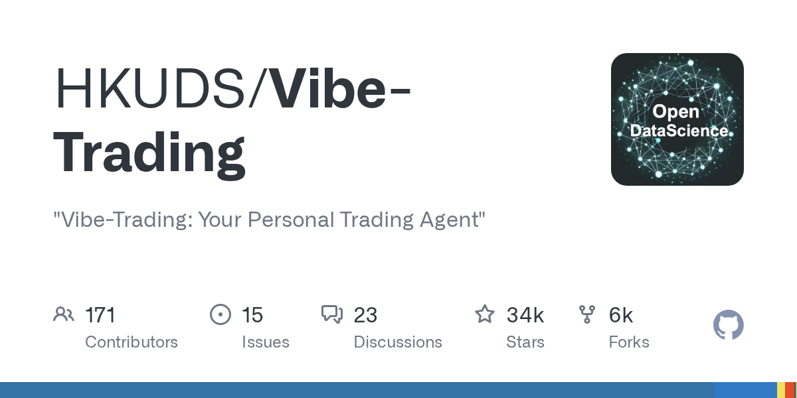

07 GitHub
HKUDS/Vibe-Trading
수치 근거를 따지는 트레이딩 에이전트의 업데이트
★ 34,325이번 주 +462PythonMIT 사내 사용 가능릴리스 v0.1.16 (09.29)최근 활동 09.29테스트 없음예제 없음AGENTS.md 없음

이 저장소는 거래와 리서치를 돕는 개인 트레이딩 에이전트다. 만든 쪽은 명령 한 번으로 거래 기능을 넓게 붙일 수 있다고 소개한다. 문서에는 API와 MCP, 웹 화면, 그림자 계정(실거래 없이 모의 추적)까지 함께 적혀 있다. 이번 주에는 v0.1.16이 공개됐다.
무엇을 하는 물건인가
이 도구는 시세 조회, 리서치, 백테스트backtest — 과거 데이터로 전략을 시험하는 절차, 브로커 연결을 묶어 주는 트레이딩 에이전트다. 결과 보고서에 어떤 숫자가 어디서 왔는지도 따진다. 이 도구가 없으면 시장 데이터 조회와 전략 시험, 주문 연결, 결과 검증을 각각 다른 화면에서 손으로 옮겨야 한다. 투자 메모와 계산기, 주문 화면을 따로 오가던 일을 한곳에 모은 셈이다.
스펙과 도입 조건
- 언어는 Python이다.
- Dockerfile이 있다.
- pip로 업그레이드 설치하는 경로가 적혀 있다.
- API와 MCPModel Context Protocol — AI 도구 연결 규약를 지원한다고 적혀 있다.
- 라이선스는 MIT다.
- 최신 릴리스는 v0.1.16이며 2026-09-29에 공개됐다.
- 테스트 유무는 저장소 점검 기준으로 없다고 표시돼 있다.
이럴 때 쓰면 좋다
- 리서치팀이 종목 아이디어를 검토하면서 백테스트 결과와 보고서 숫자가 실제 계산값과 맞는지 자동 점검할 때 유용하다.
- 해외 시장과 여러 브로커를 함께 다루는 실험 환경에서 종목 코드와 통화 표기를 맞춰 보는 데 도움이 된다.
- 고객 응대 조직이 이메일, 웹, 메신저 채널에서 들어온 투자 관련 질문을 한 화면에서 받아 처리하는 실험을 할 때 참고할 만하다.
핵심 기능
- 백테스트 결과를 바탕으로 리포트를 만들고 수치 근거를 대조한다.
- API와 MCP 방식으로 외부 도구와 연결할 수 있다.
- 여러 브로커와 데이터 소스를 연결해 거래 기능을 넓힌다.
대안 대비 차별점
이 도구는 거래 보조보다 숫자 검증 장치에 더 힘을 준 점이 눈에 띈다. 이번 버전은 숫자 근거를 더 엄격하게 다뤘다. 모델이 숫자의 성격을 직접 밝히면 게이트가 세션의 도구 근거와 대조한다. 맞지 않는 숫자만 잘라 내고 답 전체를 막지는 않는다.
사내 도입 체크
- 브로커와 데이터 제공처를 여럿 연결하므로 외부 API 호출과 자격 증명 관리 범위를 먼저 확인해야 한다.
- 이메일, WebSocket서버와 실시간으로 데이터를 주고받는 통신 방식, IM 채널을 지원해 대화 내용과 주문 관련 정보가 외부로 오갈 수 있다.
- 공식이 아닌 토큰과 계정을 경고하는 문구가 있어 운영 주체와 공식 채널 식별은 비교적 명확하다.
- 유지보수 주체는 HKUDS로 보이지만 법인 단위 운영 체계는 확인 필요다.
- 대체할 수 있는 상용 제품은 존재할 가능성이 크지만 문서에 특정 제품 비교는 없다.
원문 정보
제목: HKUDS/Vibe-Trading
최근 활동: 2026.09.29